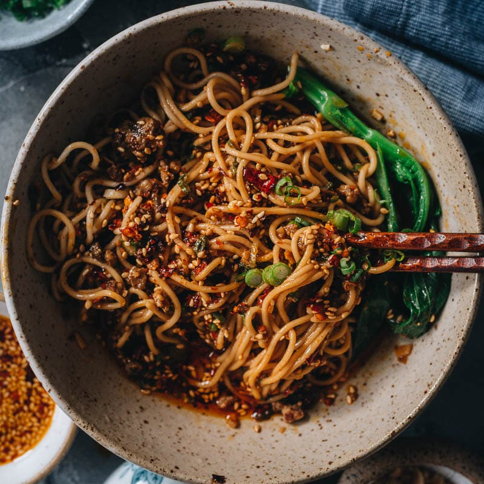

Dan Dan Mien Recipe
Dan Dan Mien Recipe

The above is a picture of my favorite Chinese dish
Dan Dan noodles is a world-famous Sichuan dish. It originated in 1841 and consists of a spicy sauce mixed with minced pork, preserved vegetables, sesame paste, and scallions served over skinny noodles.
Ingredients
- 2 tablespoons Sichuan peppercorns
- 1 cinnamon stick
- 2 star anise
- cup oil
- 1/4 cup crushed red pepper flakes